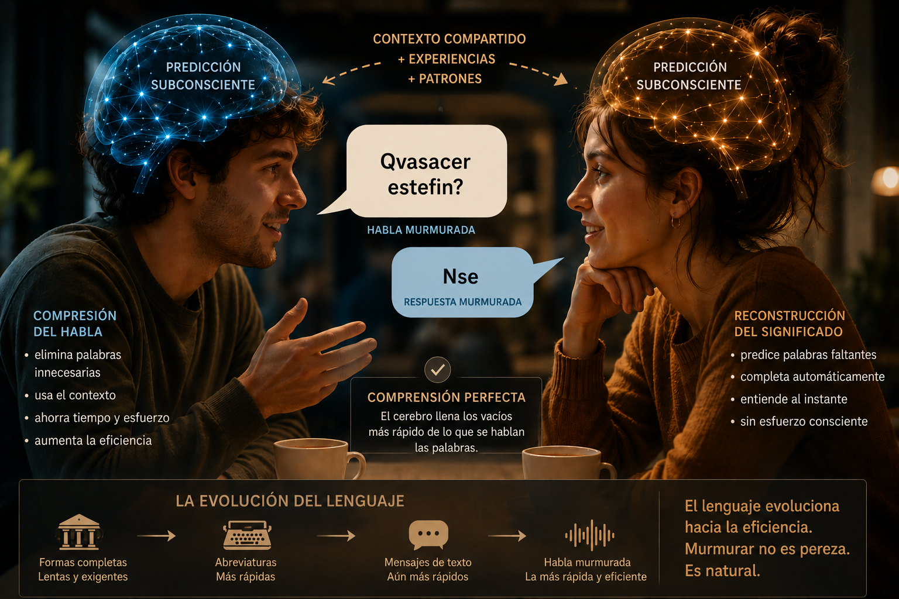

Mayo 2026
Durante años, profesores de idiomas, académicos y puristas de la gramática nos han repetido la misma idea: debemos pronunciar correctamente, hablar claramente y respetar todas las reglas del idioma. Pero ¿y si la realidad estuviera yendo en la dirección contraria? ¿Y si el “mal hablar” no fuera una degradación del lenguaje, sino una evolución natural hacia una comunicación más eficiente?
La verdad es que los seres humanos rara vez hablan como aparecen las palabras escritas en los libros. Cuando dos hablantes nativos conversan entre sí, especialmente en contextos informales, gran parte del lenguaje desaparece. Las palabras se comprimen, las sílabas se pierden, los sonidos se fusionan y, en muchos casos, frases enteras se convierten en murmullos casi ininteligibles para alguien que está aprendiendo el idioma.
Sin embargo, los hablantes nativos normalmente se entienden perfectamente.
¿Por qué?
Porque el cerebro humano no necesita escuchar cada palabra completa para comprender un mensaje.
Cuando hablamos con personas que comparten nuestro idioma nativo, el cerebro trabaja de manera predictiva. No procesamos cada sonido individual conscientemente. En cambio, identificamos patrones, contexto, intención, tono e información predecible.
Por ejemplo, en inglés, la pregunta:
“What are you going to do on the weekend?”
en una conversación real entre nativos puede sonar más parecido a:
“Chagonna… doona… weeken?”
Para un estudiante de inglés, eso puede parecer un desastre lingüístico. Pero para un hablante nativo, el cerebro automáticamente reconstruye el significado completo casi instantáneamente.
Lo mismo ocurre en español colombiano.
La frase:
“¿Qué vas a hacer este fin de semana?”
muchas veces termina sonando como:
“Qvasacer estefin?”
Y aun así, nadie tiene problemas entendiendo. ¿Por qué? Porque las palabras “qué”, “vas”, “a”, “hacer”, “este”, “fin”, ya son extremadamente predecibles dentro del contexto. El cerebro escucha fragmentos clave y rellena el resto automáticamente.
Es como un sistema de autocorrección mental funcionando en tiempo real.
Pronunciar cada palabra perfectamente requiere más esfuerzo físico, más movimientos musculares y más tiempo. Desde una perspectiva evolutiva, eso representa un gasto innecesario de energía.
Los humanos siempre han buscado maneras de comunicar más información usando menos esfuerzo. Por eso existen:
El murmullo no es pereza. Es optimización. El lenguaje naturalmente elimina lo que no necesita. Si una persona puede entender una frase sin escuchar cada sílaba, entonces esas sílabas eventualmente comienzan a desaparecer.
Durante siglos, las reglas gramaticales fueron definidas por escritores, académicos y profesores. Pero hoy el lenguaje evoluciona principalmente a través de la conversación cotidiana y la comunicación digital.
La escritura formal representa apenas una pequeña parte del lenguaje humano real. La mayoría de las personas pasan el día:
En WhatsApp nadie escribe: “Nos vemos más tarde, espero que tengas una excelente tarde.”
La mayoría escribe algo como: “Ns vms lgo👍”
Y sorprendentemente… funciona perfectamente. La comunicación moderna prioriza velocidad y eficiencia por encima de perfección académica.
Uno de los mayores problemas en la enseñanza tradicional del inglés es que muchas veces se enseña una versión artificial del idioma.
Los estudiantes aprenden:
Pero cuando finalmente escuchan a dos nativos hablando entre sí, sienten que no entienden nada. ¿Por qué? Porque los nativos no hablan como los libros. Hablan usando:
En realidad, gran parte de la fluidez consiste no en escuchar todas las palabras, sino en aprender a predecirlas. Un estudiante avanzado deja de traducir palabra por palabra y comienza a interpretar patrones incompletos. Ahí es donde aparece la verdadera comprensión auditiva.
Cuando dos personas comparten el mismo idioma y la misma cultura, poseen enormes cantidades de información compartida. Eso permite reducir radicalmente el esfuerzo comunicativo.
Es parecido a cómo dos amigos cercanos pueden entenderse con una sola mirada o una frase incompleta. El cerebro humano:
En cierto sentido, conversar ya no depende únicamente de las palabras pronunciadas. Depende de una colaboración subconsciente entre dos cerebros.
Por eso alguien que aprende un idioma puede entender perfectamente una grabación lenta de estudio, pero perderse completamente en una conversación real entre nativos. No le falta vocabulario. Le falta sincronización predictiva.
Esto puede sonar polémico, pero muchas reglas lingüísticas tradicionales representan resistencia al cambio natural del lenguaje. Los idiomas nunca permanecen estáticos.
El latín evolucionó hacia el español, francés e italiano precisamente porque la gente simplificó sonidos y estructuras durante generaciones. Nadie se sentó a diseñar esos cambios. Simplemente ocurrieron.
Lo mismo está pasando hoy. Las generaciones nuevas:
Y aunque muchos académicos consideran eso una “degeneración” del idioma, históricamente así es exactamente como evolucionan todas las lenguas. El lenguaje no existe para satisfacer profesores. Existe para transmitir información de la forma más rápida y eficiente posible.
Todo apunta hacia una comunicación cada vez más comprimida. La inteligencia artificial, los mensajes instantáneos y la comunicación digital están acelerando todavía más esta tendencia.
En el futuro probablemente veremos:
El cerebro humano ya funciona así. Simplemente estamos empezando a aceptarlo.
Probablemente sí.
Eso no significa abandonar completamente la pronunciación clara o la gramática formal. Esas herramientas siguen siendo útiles en contextos profesionales, académicos o internacionales.
Pero también debemos reconocer que el “lenguaje real” no es el mismo que aparece en los libros de texto. Los humanos naturalmente economizan el lenguaje. Siempre lo han hecho. Y probablemente siempre lo harán.
El murmullo no es necesariamente una señal de decadencia intelectual. Podría ser exactamente lo contrario: la evolución natural del lenguaje hacia una forma más rápida, más eficiente y más adaptada al funcionamiento predictivo del cerebro humano.
Y la utilidad favorece la eficiencia. Así que, abraza el murmullo. Debajo de las palabras a medio pronunciar yace la increíble capacidad de tu cerebro para comunicarse más rápido que nunca.
Si quieres entrenar tu escucha y memoria, prueba nuestra herramienta de predicción y contexto:
Probar SmarTranslator